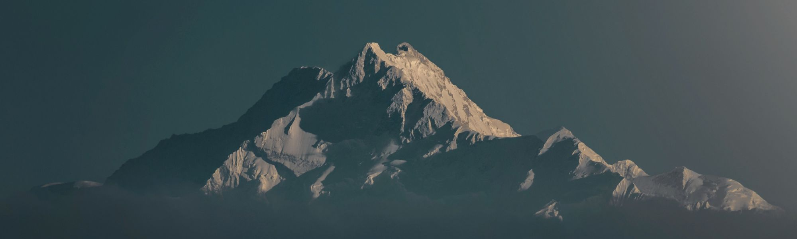
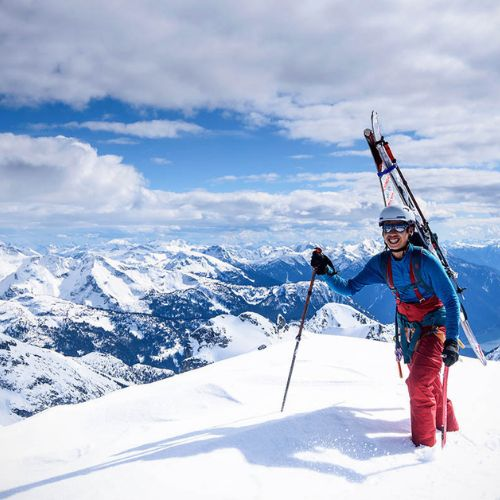
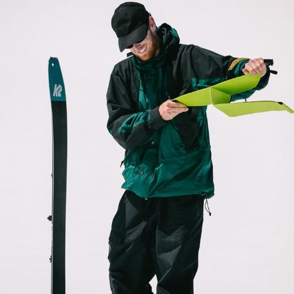
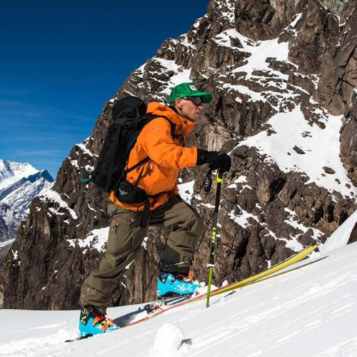
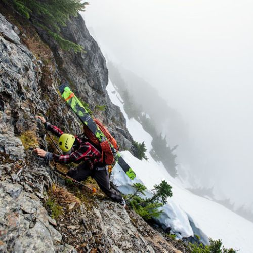

andes freeride
de donde venimos?
Dalbello, fundada en 1974 por el genuino zapatero Signor Sandro Dalbello, es la marca italiana experta en botas de esquí. A día de hoy, tanto las instalaciones de I+D como las de producción están situadas en la cercanía de las montañas Dolomitas en Asolo/Treviso y forman parte del distrito «Montebelluna SportSystem», que es la meca del desarrollo y la ingeniería de las botas de esquí. Una característica única de esta región es el excepcional nivel de conocimiento disponible, a lo que hay que sumarle la cantidad de especialistas en botas y proveedores de probada eficacia situados muy cerca. Estos atributos, unidos a la habilidad y experiencia de los empleados, algunos de los cuales se encuentran en su tercera generación en Dalbello, dan como resultado una gran familia que aspira colectivamente a los mismos objetivos. Estas ventajas y valores inestimables ofrecen oportunidades únicas, las cuales no se pueden encontrar en ningún otro lugar. Hoy en día, Dalbello es uno de los pocos fabricantes de botas de esquí que sigue produciendo en Italia. Casi todos los componentes de nuestras botas de esquí se fabrican directamente en Asolo, en el distrito de sistemas deportivos de Asolo y Montebelluna o a través de proveedores europeos.
nuestros guias
Sones Emanuel
co-fundador y super raider
Mi relación con el mundo de la nieve comienza en la década de los 70 en el Puerto de Navacerrada. En aquellos años di mis primeros pasos en el esquí. Desde entonces no he dejado de viajar por todo el mundo buscando los mejores sitios para disfrutar de mi pasión. Con aquellas primeras bajadas comenzó un vínculo con las montañas nevadas que ha estado presente en todas las facetas de mi vida personal y profesional: estuve en un colegio, SEK El Castillo, pionero en el fomento de la práctica del esquí; hice el servicio militar en una compañía de esquiadores en el Pirineo oscense; trabajé como promotor de estaciones de esquí; durante mi etapa como, director de actividades extracurriculares, profesor y director de los estudios de turismo en la Universidad SEK y en el IE mi labor docente e investigadora se ha desarrollado fundamentalmente en torno a dos temas: por un lado la integración de los principios de calidad y sostenibilidad en el turismo, y por otro el turismo deportivo y de aventura y, de manera especial, la gestión de las estaciones de esquí y montaña.
Gaston "gato" Sedran
co-fundador y sabe bocha
Me inicié en el mundo del esquí en la década de los 80 en el Pirineo oscense. Desde entonces vivo abducido por las montañas, la nieve y todo lo que rodea al fantástico mundo del esquí y me ha convertido en un verdadero apasionado de este deporte. Esquiar es el plan perfecto. No hay mejor plan ni mejor viaje que aquél que engloba naturaleza en estado puro, turismo y deporte.
Arriel "rasta" Billud
asistente copado
MMi perfil profesional está ligado al mundo de la tecnología, donde desde hace más de 20 años estoy embarcado en proyectos de informática, comunicación, diseño gráfico y mundo web. Mi pasión blanca y mi perfil profesional se han visto fusionados en este nuevo innovador y apasionante proyecto, Ski Paradise, pasión por la nieve..
Daniel Alonso
tesorero y empresario crypto
manejo la oficina y los numeros. pero tambien puedo salir a dar una vuelta cuando me dejan
